t261025-dbeb docs サイト再スタイル — 検証
測り方
各ページで getBoundingClientRect と getComputedStyle を読むスクリプトを走らせ、寸法表 (canvas AB-Spec) の値と突き合わせた。幅 1440 はスクロールバー 15px を含むので、ページの内側の幅は 1425。トップの内容幅は min(1280, 内側 − 160) と比べた (1440 では 1265、スクロールバーの無い 1440 で 1280 になる)。本文の行長は min(760, 本文列 − 128) と比べた。
寸法表との突き合わせ (16 通り、不一致 0)
| ページ | light 1440 | dark 1440 | light 375 | dark 375 |
|---|---|---|---|---|
/ | 一致 | 一致 | 横スクロール無し | 横スクロール無し |
/concepts/schema/ | 一致 | 一致 | 横スクロール無し | 横スクロール無し |
/ja/ | 一致 | 一致 | 横スクロール無し | 横スクロール無し |
/ja/concepts/schema/ | 一致 | 一致 | 横スクロール無し | 横スクロール無し |
測った値 (1440、light、en)
| 部品 | 寸法表 | 測った値 |
|---|---|---|
| ヘッダー | 高さ 64、左右 40、折り返さない | 64 / 0px 40px / nowrap |
| ロゴ | 28×28、語まで 10、Sans 600 18/24 | 28×28 / 10 / IBM Plex Sans 600 18/24 |
| ナビ | Sans 500 14/20、間 20、現在地 下線 2px --accent | 500 14/20 / 20 / 2px solid #0f6b45 |
| 検索欄 | 160×34、左右 12 | 160×34 (アイコン 14 + 間 8 で字は左 34) |
| ボタン | 高さ 36、左右 16、Sans 600 14/20 | 36 / 0px 16px / 600 14/20 |
| フッター | 高さ 56、左右 40、版 | 56 / 0px 40px / v1.0.1 |
| 本文ページの列 | 280 : 残り : 248 | 280 : 899 : 248 (罫 1px を重ねる) |
| サイドバーの行 | 36、Sans 14.5/20、子の字下げ 18 | 36 / 400 14.5/20 / 18、印 6×18 |
| 本文列 | padding 40 64 72、max-width 760 | 40px 64px 72px / 段落の幅 760 |
| H1 / H2 / H3 | 600 52/60 · 600 24/32 太罫 2px 罫から 14 · 600 19/28 | 一致 (ja は 700、H2 は 24/34) |
| 本文 / インライン / コード | 17/28 · Mono 15 · Mono 13.5/21、頭 34 | 一致 |
| note | 上 2px --accent、下 1px、padding 12 0 14 | 一致 |
| 右の目次 | padding 40 32 40 24、行 34 | 40 / 24 / 32 / 34 |
| トップ hero | padding 40 80 56、h1 600 40/48 (ja 700 40/52)、リード 18/28 | 一致 |
| 動画枠 | 16:9、outline 1px | 1265×712 (16:9)、outline 1px |
| 4 項目 / セクション / タイル | 4 列 · padding 64 80 (最後 72) · 4 列 間 16 画像 16:10 | 一致 |
横スクロール (sitemap の全 48 ページ × 幅 375 / 768 / 1440)
48 ページ × 3 幅で scrollWidth > clientWidth は 0 件。直す前は /api-reference/schema-api/ (en / ja) の幅 375 で見出しのアンカーがはみ出していた。
スクリーンショット · 1440
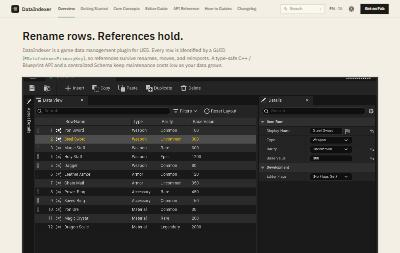
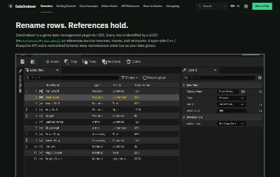
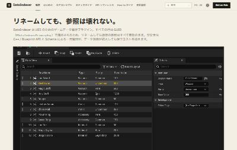
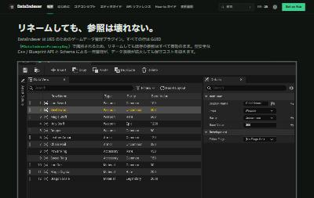
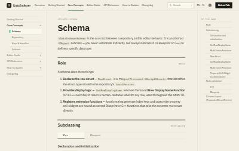
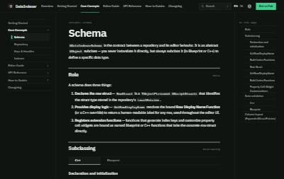
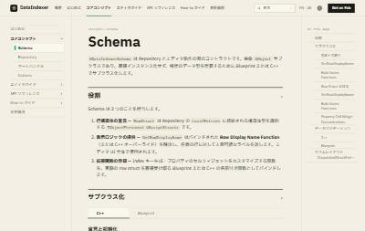
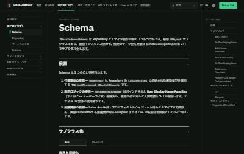
スクリーンショット · 375
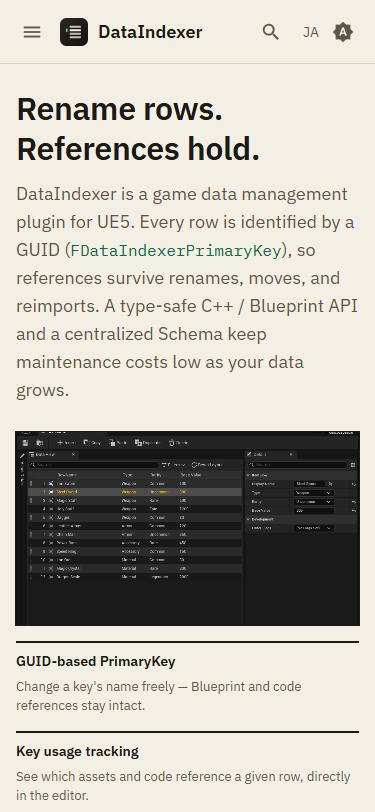
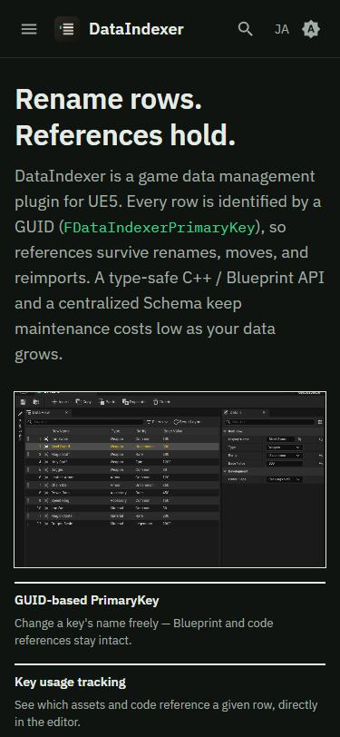
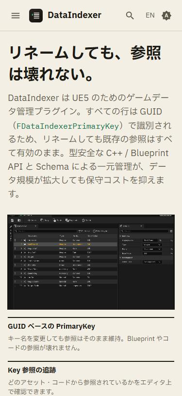
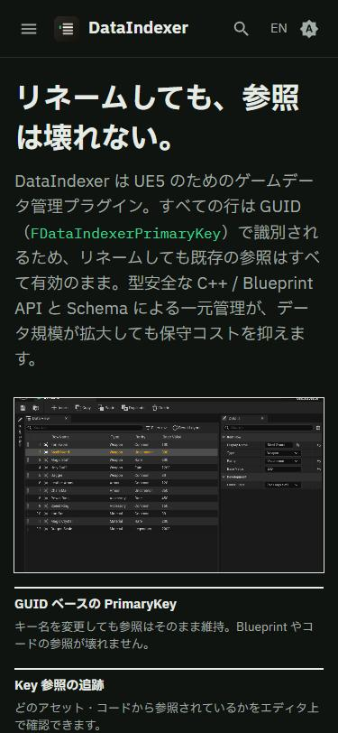
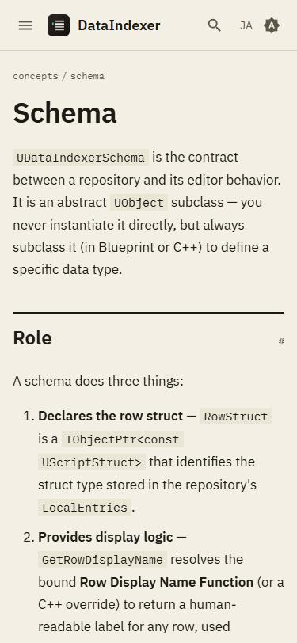
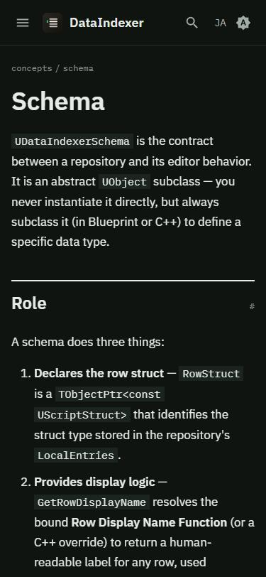
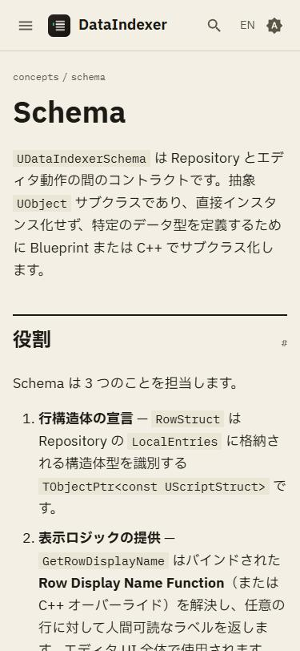
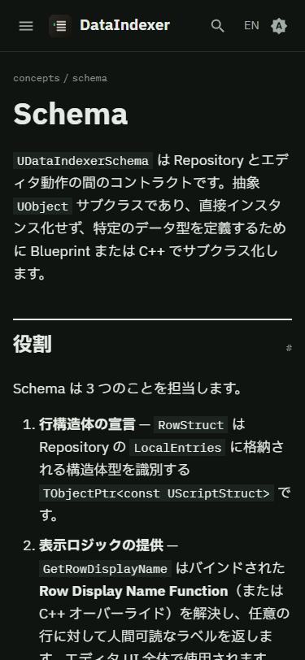